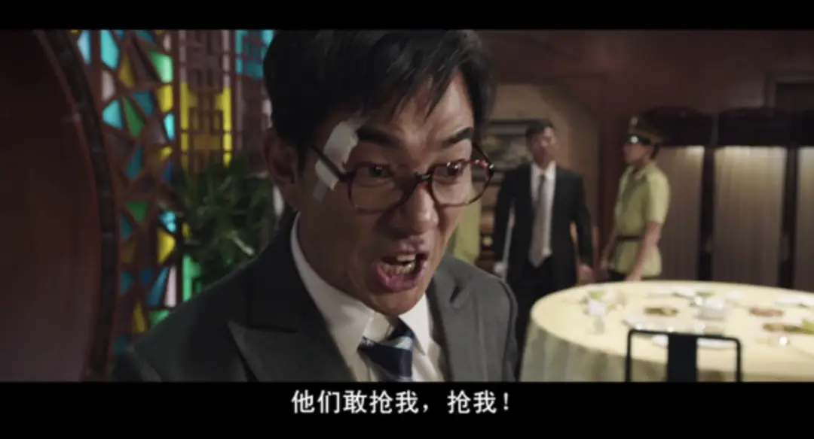
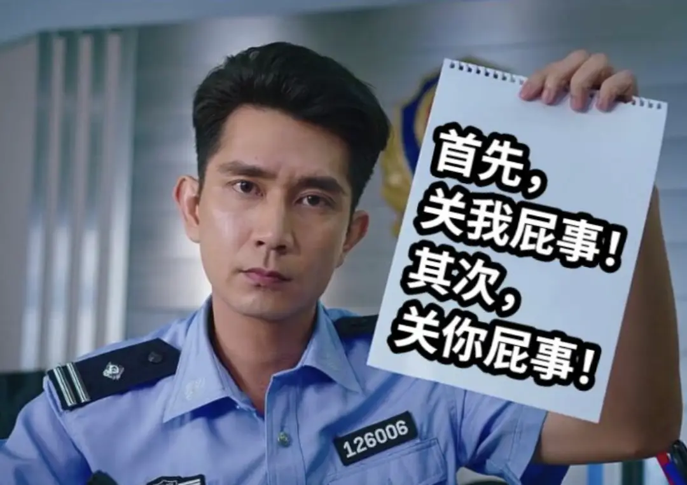
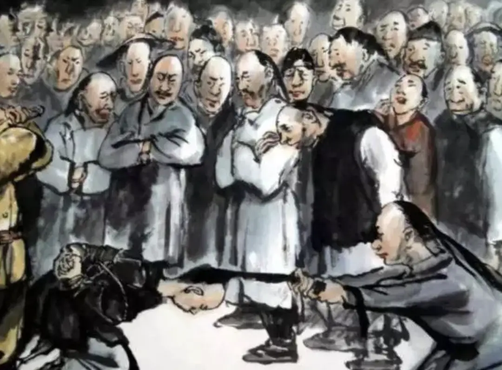
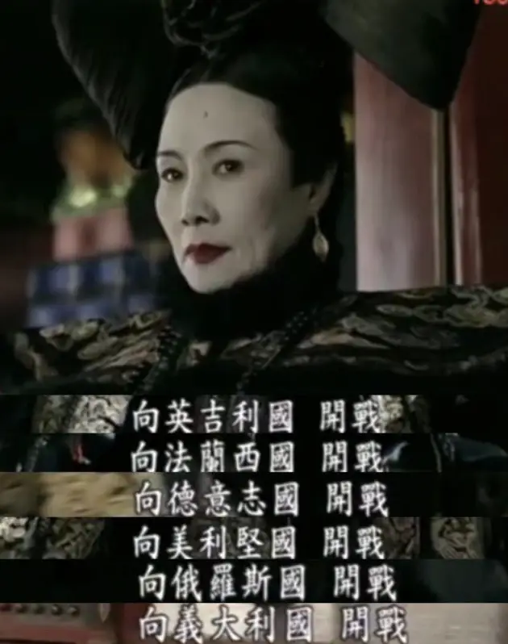
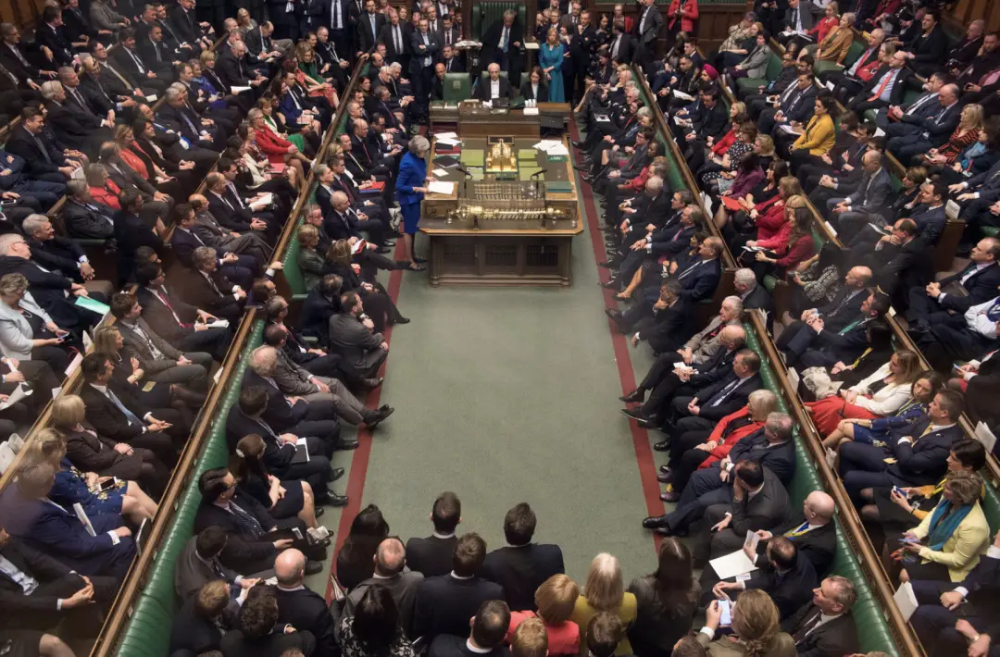
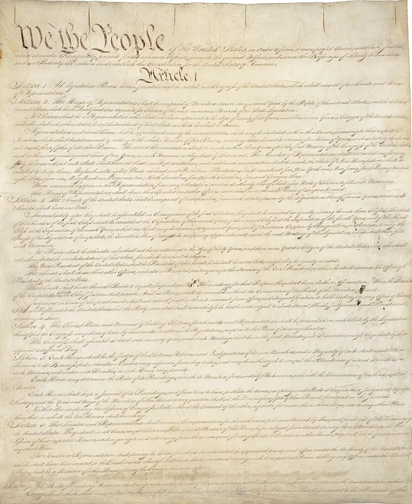
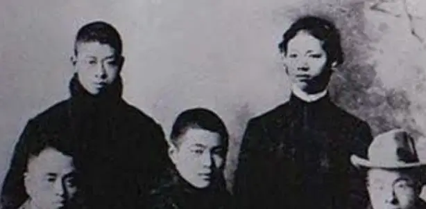
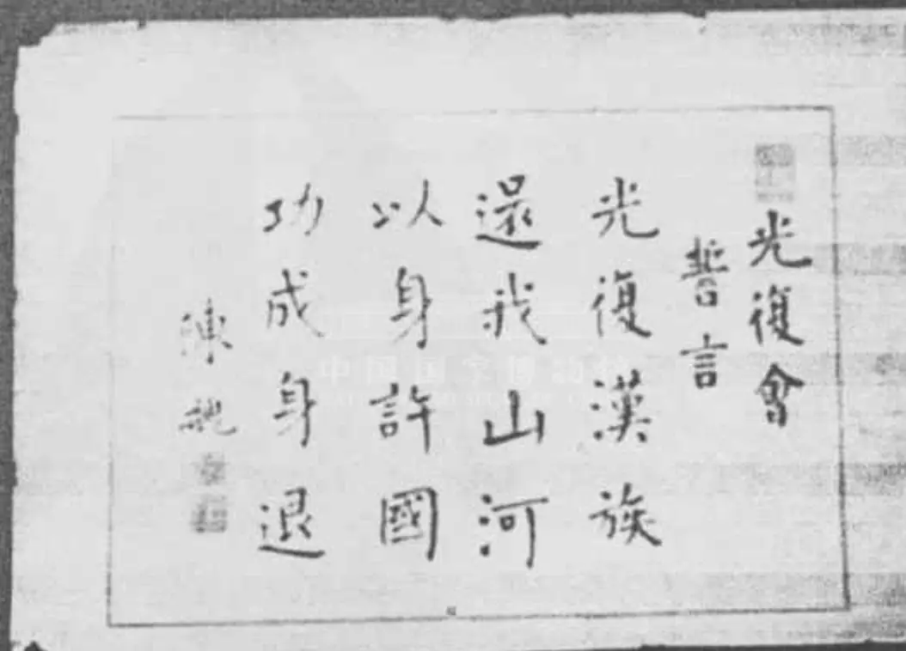
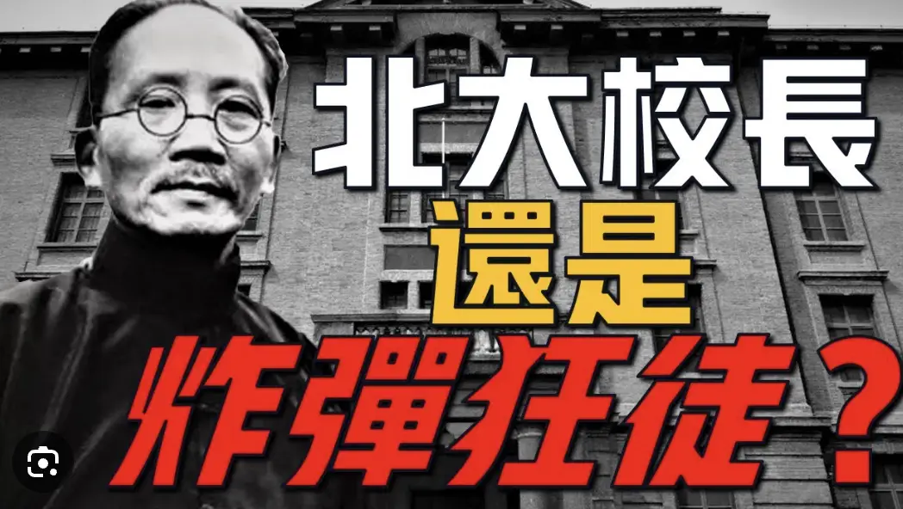
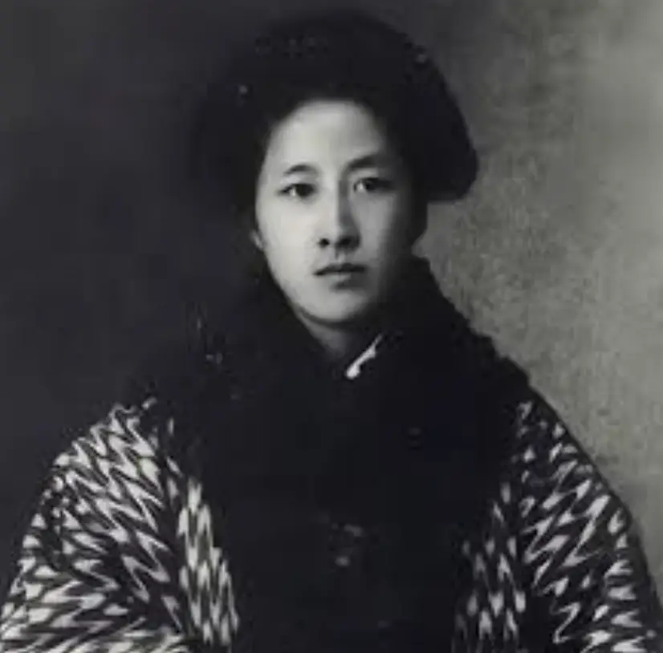

有人抢了你的房子和钱，你一定会拼命去捍卫。

但是如果有人抢了你所在小区的钱，会站出来捍卫的却寥寥无几。

这是一个常伴中华文明的世纪难题。
曾经有人总结的比较到位：
国人最大的毛病，就是有事总喜欢别人出头，希望别人出头，替自己讨回公道。
如果有收益最好，没有收益，自己也没有风险。
所以，遇到那些乐意出头的傻子，他们就拼命地鼓励。
万一傻子出事了，大家都散了，站在一边看傻子的笑话。
更过分的是，还有人立马翻脸，去充当告密者，把傻子卖掉换取自己的“岁月静好”。

这仿佛是一种中国人难以逃脱的宿命。
无力，但却是常态。
但是，每当中华民族面临危机的时候，总会有人站出来。
经纬小区的业主，虽不是上海最富有的，但也是一批靠着奋斗和努力在上海得以立足的一群精英。
在这个经济下行、舆论逼仄、内忧外患的时候，我们可以做什么？
也许我们可以看一下以前的精英是怎么做的。
120年前，大清末年。
中国面临前所未有的世纪变局，中国在列强的船坚炮利下，一再被侮辱，签下很多丧权辱国的条约。
天朝上国，何以沦落至此？

当时社会广泛的认知，是体制的差别。
中国过往几千年，一直是中央集权的帝制。
任何事情，皇帝说了算。
所以，勤劳的中国人的命运，过去几千年，一直处于一种豪赌中。
遇到好皇帝了，过几年安居乐业的日子。
但是一旦遇到蠢货，所有人都要跟着陪葬。
直到食不果腹，再绝地反击，重新开始一场豪赌。
当时，法国和英国经过民主革命，推翻了帝制，走出了一条新路。
面对复杂的问题，不再由皇帝说了算。
而是由一群人说了算。
这群人从人群中选举出来，再由这批精英，组建议会，来商量和决策议案。
群龙无首不行，为了方便主持日常工作。
大家再从众多议员中选出总负责人，也就是总理。
总理会组织专业人士和团队来进行日常运营，这就是组阁。
相比于帝制，这种新玩法，一群精英来决策一定比一个人来决策靠谱。

而为了确保这种民主机制的运行，他们形成了法律条款，这就是宪法。
这条路就是宪政。

列强，就是通过这种集体智慧机制弯道超车，吊打了我们。
基于这种差距和现实。
1904年，一个组织在上海成立。

他们当中有浙江富商之子、25岁就进进士的蔡元培。
有山阴县吏之子、从日本留学回来的徐锡麟。
有同样是官二代、留学日本的秋瑾。
还有生于秀才之家、留学日本我们非常熟悉的鲁迅，以及陈独秀。
这个组织叫做光复会。
是一个极具精英气质的晚清革命组织。
为了挽救民族危亡，他们毅然决然的站出来，高声疾呼：光复汉族，还我山河，以身许国，功成身退。

这是一句非常有格局的宣言，这些人站出来，并非为名为利，因为他们自己早已经拥有这些。
他们的使命，就是通过暗杀、暴力革命，推翻帝制大清，带领中国走上民主之路，然后功成身退。
他们并不是喊一喊口号。
我们所熟悉的蔡元培校长，在这段时间每天都在研究炸弹，日思夜想着要把顽固腐朽的清朝大官炸死。

他们更是发动多场起义，进一步动摇着清朝的统治根基。
徐锡麟、秋瑾更是英勇就义。
秋瑾在临刑前，留下“秋风秋雨愁煞人”的诗句激励着无数人继续前行。

光复会的成员日后，更成为了同盟会和共产党创建的核心人物，成为了一群举足轻重的政治力量。
这就是以前的精英。
他们之所以伟大，在于直面了历史时代的困局和矛盾，并且勇敢站出来、砥砺前行。
我们如今生活的是一个和平年代，我们所面对的时代困局与他们不同，但是他们身上表现出来的大义却是我们应该学习的。
人生了了，我们在上海，并不是一味的攫取工作机会和收入，更是要承担起更多社会责任。
而小区自治，绝对是一个最被低估的、实实在在的练兵场。
小区能否自治，考验的是我们是否有能力群策群力，来解决复杂问题。
小区能否按照议事规则办事，考验的是我们的公民意识和法治意识。
小区自治与其他基层组织，例如居委会、房办、地方政府的互动，考验的是小区基层自治的扩展性以及地方基层组织的水平。
从文化意义上，小区自治，是中国城市化后，家族形态被打破后，能否建立起一种现代意义的社区文化的关键。
总之，如果我们连自己每天生活的小区都搞不定，我们又何以在更大层面上的角逐中获胜。
中美对抗，我关注的始终是我们自己的发展和动作，毕竟，不论敌人怎么强大，能打败自己的永远是自己。
这就是我们要站出来的意义。
为了上海这座城市的尊严。
为了脚踏实地的社会参与。
为了缔造一种区别于以往家族关系的新型社区和归属。
更为了中国，作为一个高举民主、法治现代国家的证明。
- end -
推荐阅读
▼
（点击文字即可获取全文）
低语者
在艰难困苦中一次又一次聆听，去抉择、去行动、去勇敢
我们的低语，也会成为这个时代的低语，会成为中国楼市的低语
这是我们学习到的功课
在拥挤的地铁里，我们在低语
在充满压力的工作中，我们在低语
在日复一日的生活里，我们在低语
在他人的灾难面前，我们在低语
在时代的巨轮面前，我们在低语
我们未能拥有一张没被欺负过的脸庞
但却拥有直面鲜血的勇气
这是我们自己的命
也是属于我们独一无二的使命
我们微小，却可以发出最真实的低语
而真实，本身就是最大的力量
比宏伟更动人
比大叙事更脚踏实地
长按二维码，一键关注